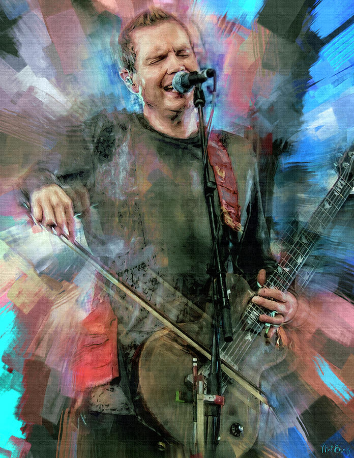
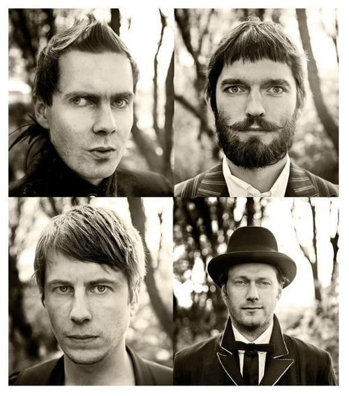

(си́гур ро́ус, в переводе с исланд.— «роза победы») — исландская пост-рок-группа с мелодическими, минималистичными и классическими элементами, основанная в 1994 году. Группа известна «неземным» звучанием и фальцетом вокалиста Йоуна Тоура Биргиссона.
Состав

- Йоун Тоур «Йоунси» Биргиссон (Jón Þór «Jónsi» Birgisson) — вокал, гитара, смычковая гитара, клавишные, губная гармоника, банджо
- Георг «Гогги» Хоульм (Georg «Goggi» Hólm) — бас-гитара, колокольчики
- Кьяртан «Кьярри» Свейнссон (Kjartan «Kjarri» Sveinsson) — клавиши, гитара, пианино, орган, флейта, гобой, банджо, вокал (1998—2012)
- Орри Паудль Дирасон (Orri Páll Dýrason) — ударные, клавишные (1999 — настоящее время)
Творчество
Hoppipolla
Svefn-g-englar
Takk...